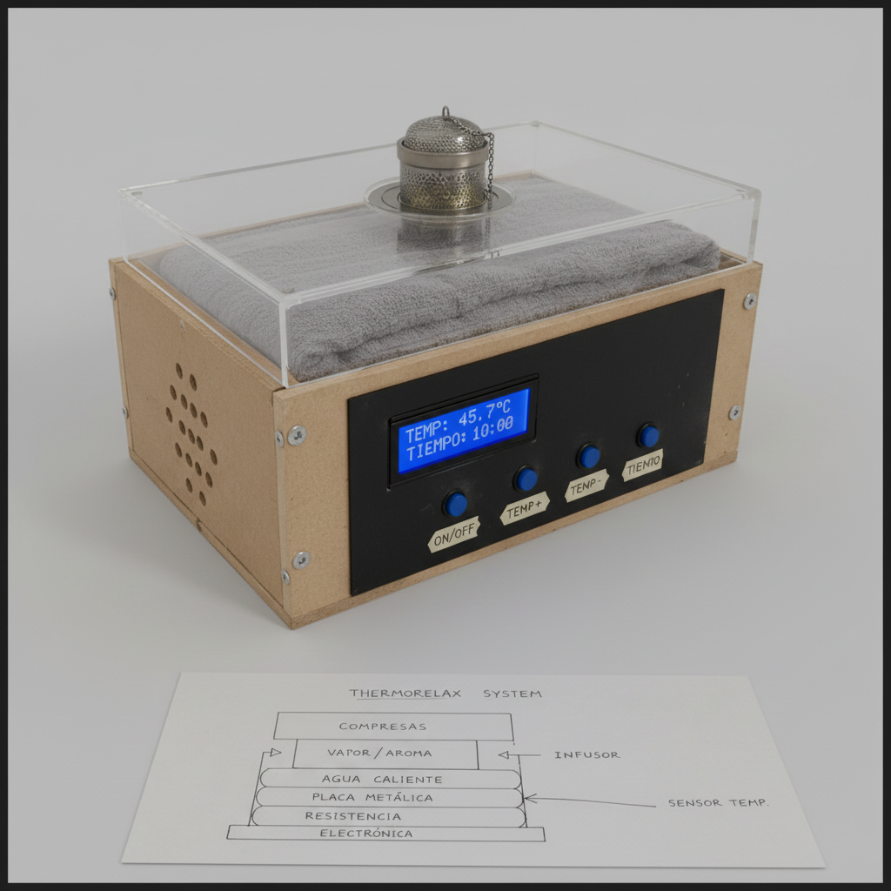

Objetivo
Ofrecer un prototipo funcional capaz de calentar compresas y generar vapor aromático para aliviar molestias musculares.
Prototipo de bienestar térmico inteligente para compresas terapéuticas con control digital, vapor aromático y diseño funcional.

ThermoRelax System es una solución académica que integra electrónica, control térmico, interfaz digital y una experiencia de usuario cuidada para la terapia de calor.
Ofrecer un prototipo funcional capaz de calentar compresas y generar vapor aromático para aliviar molestias musculares.
Diseño compacto, componentes accesibles y operación segura para uso académico y demostrativo.
Interfaz táctil con temperatura, temporizador y modos adicionales para aromaterapia y relajación.
El diseño se apoya en cuatro bloques principales: sistema térmico, compartimento de compresas, electrónica de control y difusión aromática.
ThermoRelax se organiza en una base electrónica, un compartimento térmico de agua, una zona para compresas y un sistema de vapor aromático controlado desde una interfaz digital.

El sistema utiliza una resistencia reciclada para calentar una placa metálica que transmite calor al agua, generando vapor constante y calor uniforme para las compresas.
Resumen de cifras y componentes para su presentación académica.
| Característica | Valor aproximado |
|---|---|
| Dimensiones | 45 × 35 × 25 cm |
| Alimentación | 110–127V AC |
| Control | Arduino UNO/Nano |
| Temperatura | 30°C – 80°C |
| Temporizador | 1–120 min |
| Sensor | Control PID / termopar tipo k |
| Pantalla | LCD 16x2 |
| Potencia | 300W–600W |
| Material | Precio MXN |
|---|---|
| Arduino UNO/Nano | $180 |
| MDF | $180 |
| Acrilico | $150 |
| pyrex | $200 |
| PID Rex-C100 | $350 |
| SSR + Disipador | $350 |
| resistencia calefactora | $150 |
| cableado y fusibles | $150 |
| termopar tipo k | $120 |
| tornillos y sellos | $100 |
| Total estimado | $1500-$2200 |
| subtotal estimado p/p | $93.75-137.5 |

Secuencia de trabajo recomendada desde el diseño inicial hasta las pruebas finales.
Boceto, medidas y distribución interna del prototipo.
Corte de MDF, ensamblaje y montaje de acrílico.
Instalación de resistencia, placa metálica y refractario.
Cableado de Arduino, LCD, relé y sensor.
Control de temperatura, temporizador y apagado automático.
Verificación de estabilidad térmica, seguridad y generación de vapor.
ThermoRelax System demuestra que es posible combinar tecnología, seguridad y estética para una exposición de proyecto de clase.
Electrónica, mecánica y software en una solución compacta.
Aplica conocimientos de mecatrónica, sistemas y diseño de prototipos.
Un producto con potencial de bienestar y buena presentación visual.